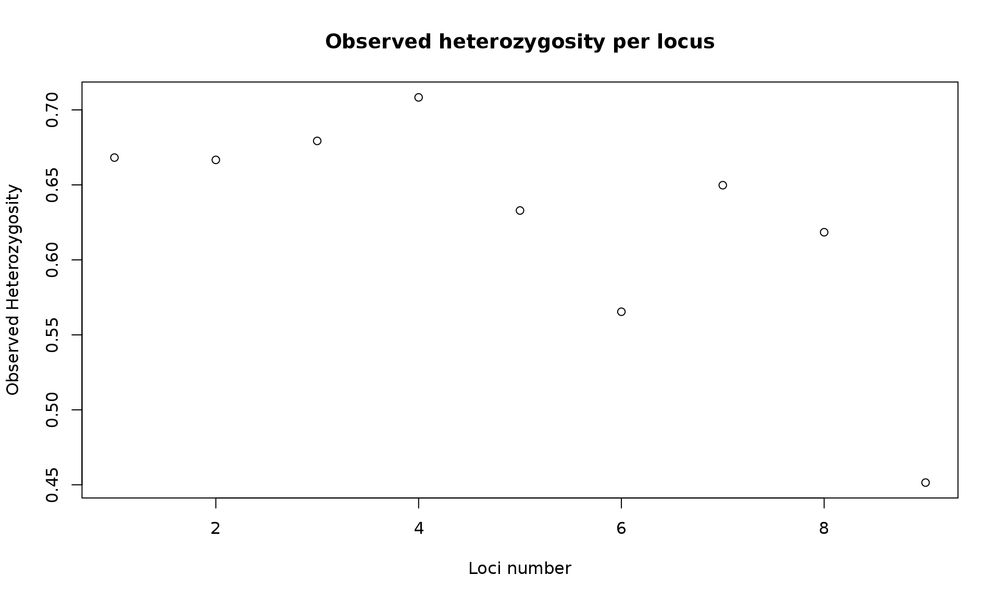
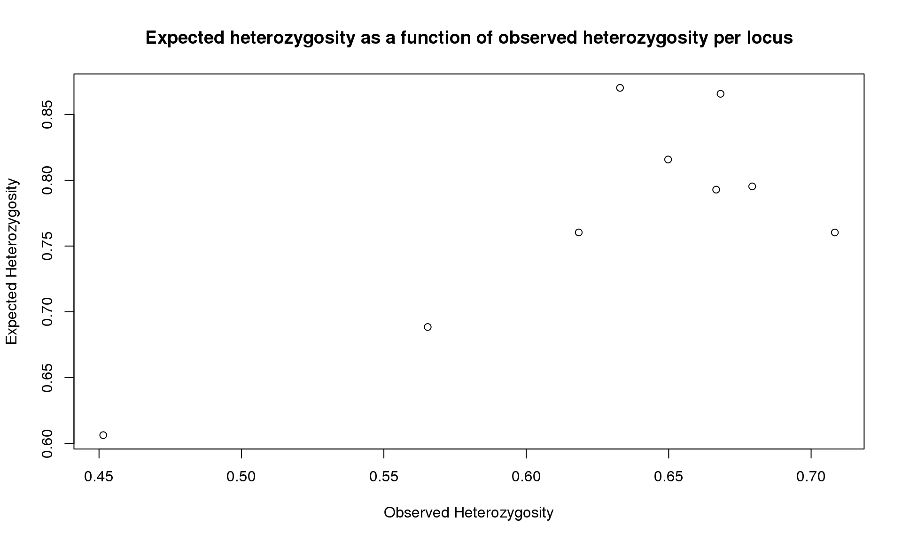
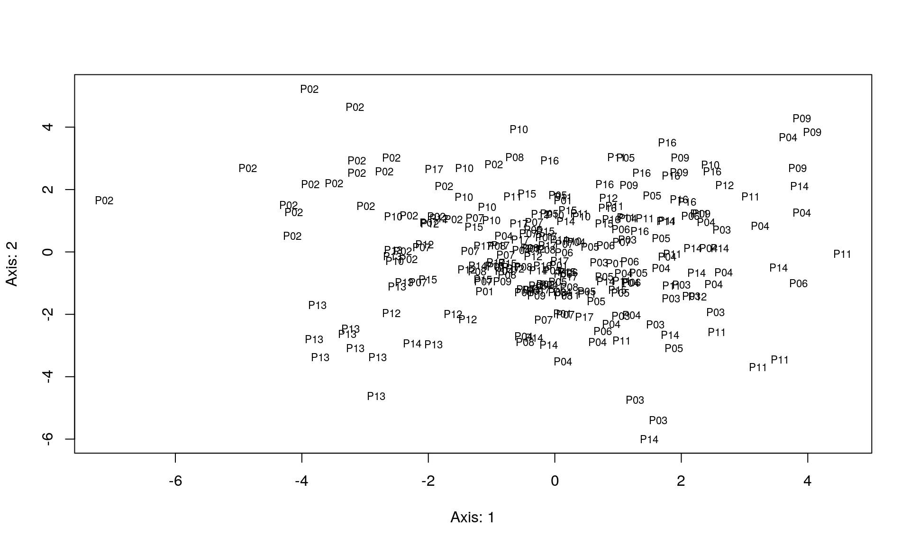

In this vignette, you will calculate basic population genetic statistics from microsatellite data using R packages.
The data used for these analyses are contained in an R dataset: nancycats, a “genind” object, i.e. an object of the package adegenet. It contains microsatellite genotypes of 237 cats from 17 colonies of Nancy (France). Each individuals of the 17 colonies are genotyped for 9 microsatellite loci.
library("adegenet")
library("pegas")
library("hierfstat")data("nancycats", package = "adegenet")
summary(nancycats)##
## // Number of individuals: 237
## // Group sizes: 10 22 12 23 15 11 14 10 9 11 20 14 13 17 11 12 13
## // Number of alleles per locus: 16 11 10 9 12 8 12 12 18
## // Number of alleles per group: 36 53 50 67 48 56 42 54 43 46 70 52 44 61 42 40 35
## // Percentage of missing data: 2.34 %
## // Observed heterozygosity: 0.67 0.67 0.68 0.71 0.63 0.57 0.65 0.62 0.45
## // Expected heterozygosity: 0.87 0.79 0.8 0.76 0.87 0.69 0.82 0.76 0.61nancycats ## /// GENIND OBJECT /////////
##
## // 237 individuals; 9 loci; 108 alleles; size: 145.3 Kb
##
## // Basic content
## @tab: 237 x 108 matrix of allele counts
## @loc.n.all: number of alleles per locus (range: 8-18)
## @loc.fac: locus factor for the 108 columns of @tab
## @all.names: list of allele names for each locus
## @ploidy: ploidy of each individual (range: 2-2)
## @type: codom
## @call: genind(tab = truenames(nancycats)$tab, pop = truenames(nancycats)$pop)
##
## // Optional content
## @pop: population of each individual (group size range: 9-23)
## @other: a list containing: xydiv <- summary(nancycats)
div##
## // Number of individuals: 237
## // Group sizes: 10 22 12 23 15 11 14 10 9 11 20 14 13 17 11 12 13
## // Number of alleles per locus: 16 11 10 9 12 8 12 12 18
## // Number of alleles per group: 36 53 50 67 48 56 42 54 43 46 70 52 44 61 42 40 35
## // Percentage of missing data: 2.34 %
## // Observed heterozygosity: 0.67 0.67 0.68 0.71 0.63 0.57 0.65 0.62 0.45
## // Expected heterozygosity: 0.87 0.79 0.8 0.76 0.87 0.69 0.82 0.76 0.61plot(div$Hobs, xlab="Loci number", ylab="Observed Heterozygosity",
main="Observed heterozygosity per locus")
plot(div$Hobs, div$Hexp, xlab="Observed Heterozygosity", ylab="Expected Heterozygosity",
main="Expected heterozygosity as a function of observed heterozygosity per locus")
bartlett.test(list(div$Hexp, div$Hobs)) # difference of means ##
## Bartlett test of homogeneity of variances
##
## data: list(div$Hexp, div$Hobs)
## Bartlett's K-squared = 0.046962, df = 1, p-value = 0.8284We get various information from the command summary. The one that interest us is the observed and expected heterozygosity per locus. We observed that heterozygosity varies among loci.
The results from the Bartlett test indicates that we have no difference between the mean observed and expected heterozygosity
The function basic.stats() provides the observed heterozygosity (\(H_o\)), mean gene diversities within population (\(H_s\)), \(F_{is}\), and \(F_{st}\). The function boot.ppfis() provides confidence interval for \(F_{is}\). The function indpca() does a PCA on the centered matrix of individuals’ allele frequencies.
nancycats.hfstat <- genind2hierfstat(nancycats)
basicstat <- basic.stats(nancycats, diploid = TRUE, digits = 2)
names(basicstat)## [1] "n.ind.samp" "pop.freq" "Ho" "Hs" "Fis"
## [6] "perloc" "overall"boot.ppfis(nancycats.hfstat) ## $call
## boot.ppfis(dat = nancycats.hfstat)
##
## $fis.ci
## ll hl
## 1 -0.0091 0.3225
## 2 0.1125 0.2877
## 3 0.0717 0.2843
## 4 0.0836 0.2485
## 5 0.0432 0.2340
## 6 0.0684 0.3041
## 7 0.0777 0.2984
## 8 0.0578 0.3579
## 9 -0.2368 0.0739
## 10 -0.0621 0.2425
## 11 0.0855 0.2418
## 12 0.0701 0.2647
## 13 -0.1090 0.1261
## 14 0.0021 0.2395
## 15 -0.1753 0.0812
## 16 -0.0604 0.1725
## 17 -0.1403 0.1928x <- indpca(nancycats.hfstat)
plot(x, cex = 0.7)
hw.test(nancycats, B = 1000)## chi^2 df Pr(chi^2 >) Pr.exact
## fca8 395.80006 120 0.000000e+00 0
## fca23 239.34221 55 0.000000e+00 0
## fca43 434.33397 45 0.000000e+00 0
## fca45 66.11849 36 1.622163e-03 0
## fca77 270.52066 66 0.000000e+00 0
## fca78 402.80002 28 0.000000e+00 0
## fca90 217.19836 66 0.000000e+00 0
## fca96 193.36764 66 1.965095e-14 0
## fca37 291.00731 153 1.209777e-10 0We get for each locus a test of significance of the null hypothesis: \(H_0\) the locus is in HW equilibrium in the population/ \(H_1\). The locus is not in HW equilibrium.
We can conclude from the p-values of each test that any locus is in HW equilibrium.
In this vignette, we learned how to explore the patterns of genetic diversity in one population. Also, you have an idea of potential violations of the dataset to the null Wright-Fischer model.
You may now want to move on to looking into population differentiation.
This shows us useful information for reproducibility. Of particular importance are the versions of R and the packages used to create this workflow. It is considered good practice to record this information with every analysis.
options(width = 100)
devtools::session_info()## Session info ---------------------------------------------------------------------------------------## setting value
## version R version 3.3.0 (2016-05-03)
## system x86_64, linux-gnu
## ui X11
## language (EN)
## collate en_US.UTF-8
## tz <NA>
## date 2016-05-24## Packages -------------------------------------------------------------------------------------------## package * version date source
## ade4 * 1.7-4 2016-03-01 CRAN (R 3.3.0)
## adegenet * 2.0.1 2016-02-15 CRAN (R 3.3.0)
## ape * 3.4 2015-11-29 CRAN (R 3.3.0)
## assertthat 0.1 2013-12-06 CRAN (R 3.3.0)
## boot 1.3-18 2016-02-23 CRAN (R 3.3.0)
## cluster 2.0.4 2016-04-18 CRAN (R 3.2.5)
## coda 0.18-1 2015-10-16 CRAN (R 3.3.0)
## colorspace 1.2-6 2015-03-11 CRAN (R 3.3.0)
## DBI 0.4-1 2016-05-08 CRAN (R 3.3.0)
## deldir 0.1-12 2016-03-06 CRAN (R 3.3.0)
## devtools 1.11.1 2016-04-21 CRAN (R 3.3.0)
## digest 0.6.9 2016-01-08 CRAN (R 3.3.0)
## dplyr 0.4.3 2015-09-01 CRAN (R 3.3.0)
## evaluate 0.9 2016-04-29 CRAN (R 3.3.0)
## formatR 1.4 2016-05-09 CRAN (R 3.3.0)
## gdata 2.17.0 2015-07-04 CRAN (R 3.3.0)
## ggplot2 2.1.0 2016-03-01 CRAN (R 3.3.0)
## gmodels 2.16.2 2015-07-22 CRAN (R 3.3.0)
## gtable 0.2.0 2016-02-26 CRAN (R 3.3.0)
## gtools 3.5.0 2015-05-29 CRAN (R 3.3.0)
## hierfstat * 0.04-22 2015-12-04 CRAN (R 3.3.0)
## htmltools 0.3.5 2016-03-21 CRAN (R 3.3.0)
## httpuv 1.3.3 2015-08-04 CRAN (R 3.3.0)
## igraph 1.0.1 2015-06-26 CRAN (R 3.3.0)
## knitr 1.13 2016-05-09 CRAN (R 3.3.0)
## lattice 0.20-33 2015-07-14 CRAN (R 3.3.0)
## LearnBayes 2.15 2014-05-29 CRAN (R 3.3.0)
## magrittr 1.5 2014-11-22 CRAN (R 3.3.0)
## MASS 7.3-45 2016-04-21 CRAN (R 3.3.0)
## Matrix 1.2-6 2016-05-02 CRAN (R 3.3.0)
## memoise 1.0.0 2016-01-29 CRAN (R 3.3.0)
## mgcv 1.8-12 2016-03-03 CRAN (R 3.3.0)
## mime 0.4 2015-09-03 CRAN (R 3.3.0)
## munsell 0.4.3 2016-02-13 CRAN (R 3.3.0)
## nlme 3.1-128 2016-05-10 CRAN (R 3.3.0)
## pegas * 0.9 2016-04-16 CRAN (R 3.3.0)
## permute 0.9-0 2016-01-24 CRAN (R 3.3.0)
## plyr 1.8.3 2015-06-12 CRAN (R 3.3.0)
## R6 2.1.2 2016-01-26 CRAN (R 3.3.0)
## Rcpp 0.12.5 2016-05-14 CRAN (R 3.3.0)
## reshape2 1.4.1 2014-12-06 CRAN (R 3.3.0)
## rmarkdown 0.9.6 2016-05-01 CRAN (R 3.3.0)
## scales 0.4.0 2016-02-26 CRAN (R 3.3.0)
## seqinr 3.1-3 2014-12-17 CRAN (R 3.3.0)
## shiny 0.13.2 2016-03-28 CRAN (R 3.3.0)
## sp 1.2-3 2016-04-14 CRAN (R 3.3.0)
## spdep 0.6-4 2016-04-12 CRAN (R 3.3.0)
## stringi 1.0-1 2015-10-22 CRAN (R 3.3.0)
## stringr 1.0.0 2015-04-30 CRAN (R 3.3.0)
## vegan 2.3-5 2016-04-09 CRAN (R 3.3.0)
## withr 1.0.1 2016-02-04 CRAN (R 3.3.0)
## xtable 1.8-2 2016-02-05 CRAN (R 3.3.0)
## yaml 2.1.13 2014-06-12 CRAN (R 3.3.0)